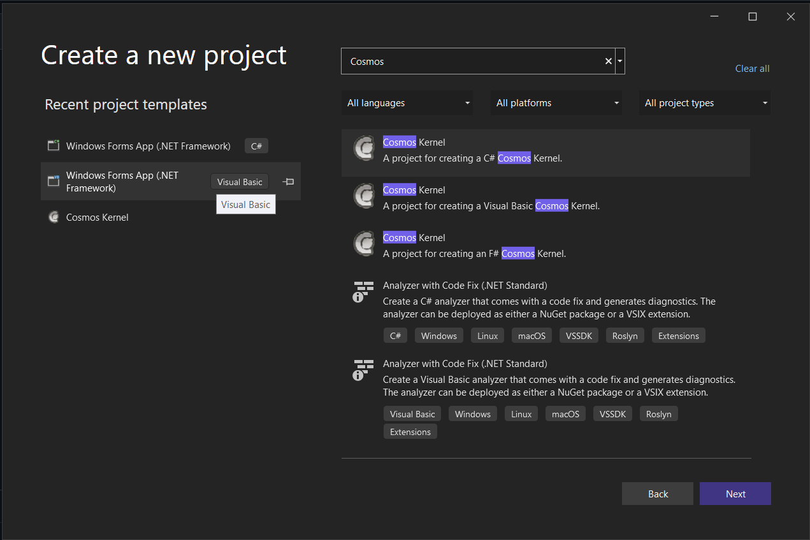
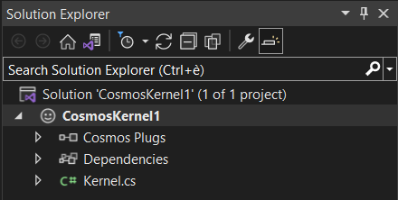
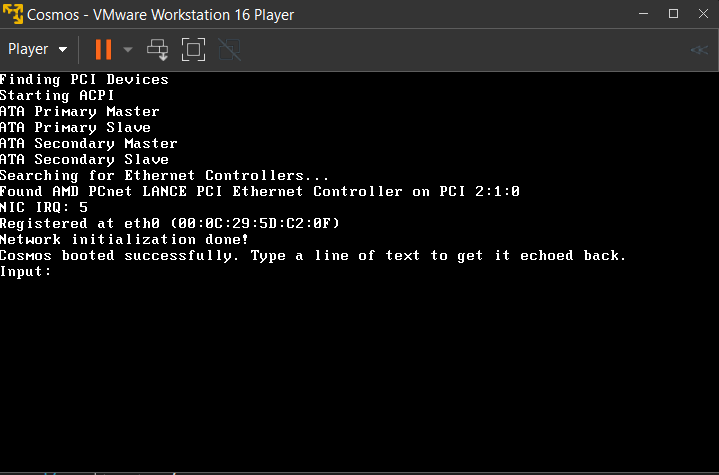
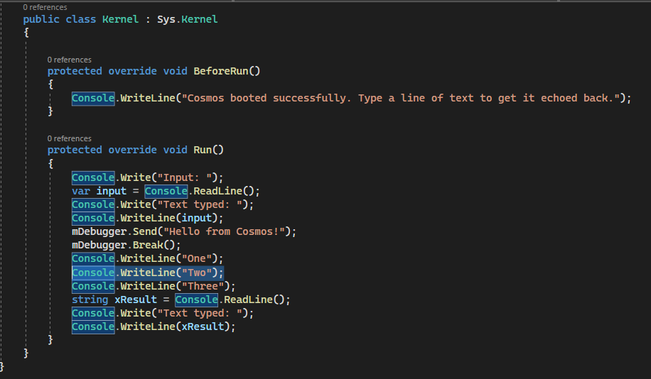
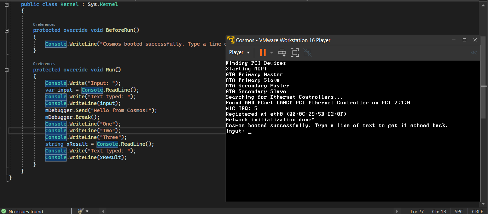
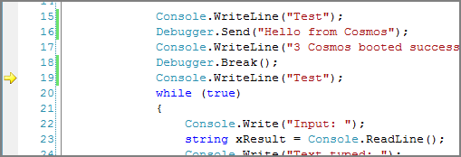
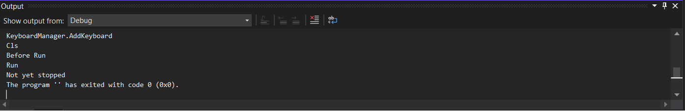

Getting Started
Introducing Cosmos
Cosmos (C# Open Source Managed Operating System) is an operating system development kit which uses Visual Studio as its development environment. Despite C# in the name any .NET based language can be used including VB.NET, Fortran, Delphi Prism, IronPython, F# and more. Cosmos itself and the kernel routines are primarily written in C#, and thus the Cosmos name. Besides that, NOSMOS (.NET Open Source Managed Operating System) sounds stupid.
Cosmos is not an operating system in the traditional sense, but instead it is an "Operating System Kit", or as I like to say "Operating System Legos". Cosmos lets you create operating systems just as Visual Studio and C# normally let you create applications. Most users can write and boot their own operating system in just a few minutes, all using Visual Studio. Milestone 5 includes new features such as an integrated project type in Visual Studio, and an integrated debugger. You can debug your operating system directly from Visual Studio using breakpoints.
Cosmos is available in two distributions, the developer kit (dev kit), and the user kit. The dev kit is designed for users who want to work on Cosmos itself. The user kit is designed for those who are interested in building their own operating system and doing some Cosmos work. The dev kit might be thought of as the Cosmos SDK. Most users should start off with the user kit as it is not so overwhelming like the dev kit. This article focuses on the user kit.
Writing your first Operating System
Create a new project as you would any C# project, but select Cosmos Kernel
(Previously CosmosBoot; same functionality) as the project type.

A starter project will be created. It looks very much like a standard C# console application.

Program.cs contains the boot and execution code. Instead of seeing a Windows console window, you will see the following:

This is your operating system running in VMWare Player! Cosmos can of course also be booted in VMWare Workstation, Hyper-V, Virtual PC, Bochs, or on real hardware. But by default Cosmos uses VMWare Player because it is both free, and reliable. Cosmos can even debug in Visual Studio, even when running on another machine.
Integrated Debugging
Debugging is a major issue with operating system development. The Cosmos team was not content enough to simply conquer building and deployment, we want to make developing operating system as easy as developing Windows applications. Debugging a Cosmos based operating system should feel very familiar to you. Lets modify our project a little bit to show the effect, and set a breakpoint.

Now run the project again.

Note that the execution stopped at "One"? That is becuase in Visual Studio our project has stopped on a breakpoint. Simply press F5 to continue just as you would in a normal application!
In addition to breakpoints Cosmos also supports step into (F11) as well. Trace over (F10) is not supported yet.
Debugger Communication
The debugger uses the serial port to communicate. Because of this, debugging only works wtih virtualization environments that support serial ports such as VMWare. QEMU supports serial ports as well, but its serial port implementation is seriously broken on Windows and makes debugging impossible using QEMU. To debug on real hardware, you must use a physical serial cable. In the future Cosmos will also support debugging over Ethernet.
Extra Debugging
Cosmos supports some explicit methods that can be used to communicate with the debugger and use additional functionality. It is accessed using the Debugger class in the Cosmos.Debug namespace in the Cosmos.Kernel assembly. This assembly is used by all Cosmos projects.
Code Based Breakpoints
Debugger.Break();
Break can be used to issue a code based break. Visual Studio will break on the line after this statement.

Since Cosmos does not support conditional breakpoints in the IDE yet, code base breaks are very useful for implementing such. For example:
if (x == 5) {
Debugger.Break();
}
Alternatively you can call the .NET class libary break:
System.Diagnostics.Debugger.Break();
Both functions will produce the same result.
Debug Output
Debug strings can be output to the debug window of the host. Because Cosmos does not support watches yet, this functionality can be very useful for watching variable values and for performing tracing without breakpoints.
Debugger.Send("Hello from Cosmos!");
When this line is executed, it will send a message over the debugging channel and it will appear in the Visual Studio output window.

What's the catch?
There really is no catch. Everything we've shown here is functioning as seen. No mockups were used. However we still have a lot of work to go. Items of interest that are on our current task list include interfaces (necessary for foreach loops), file systems (partial support exists), threads, networking, and graphics. We have prototypes and experimentation for each, but none have been rolled into the mainline Cosmos development as of yet.
What was that Syslinux thing I saw on boot?
Cosmos does not run on Linux. A boot loader called Syslinux is used to boot Cosmos. After booting, Syslinux is not used. Syslinux is a bootloader and is not a Linux distro. Syslinux simplifies the booting process by doing tasks such as enabling the A20 gate, initializing hardware, and switching to real mode (all of which are required by modern operating systems).
Obtaining Cosmos
- Cosmos Website - http://www.GoCosmos.org
- Source Code - Both dev kit and user kit - http://github.com/CosmosOS/Cosmos/